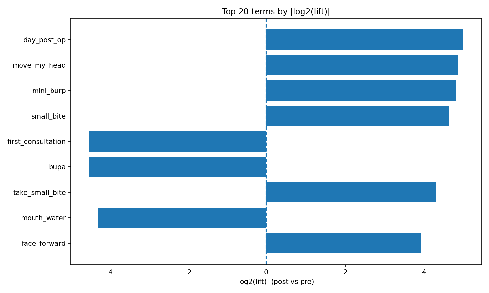
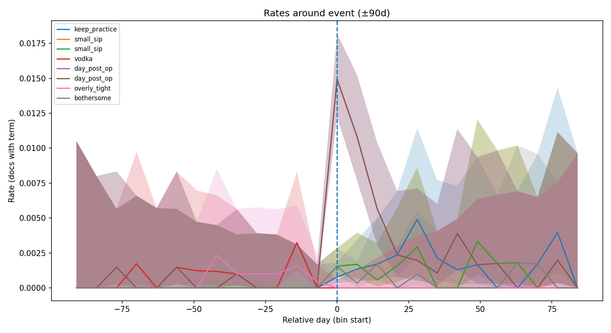

per-Event Vocabulary Summary (window = ±90 days)
Inputs
- Parquet: base_ngram_cache_with_details.parquet
- Botox CSV: annotated_users/user_botox_dates_fixed.csv
- Vocab JSON: testing/llm_addition_testing/10-1_all/single_term_eval_corpusctx_10_01_23_04/accepted_all_flat.json
- Event day included in post: ts ≥ t0
- Bin size: 7 days; Overlap policy: clip_midpoint
Downloads
Top movers (by |log2(lift)|)

Time series (top movers)
